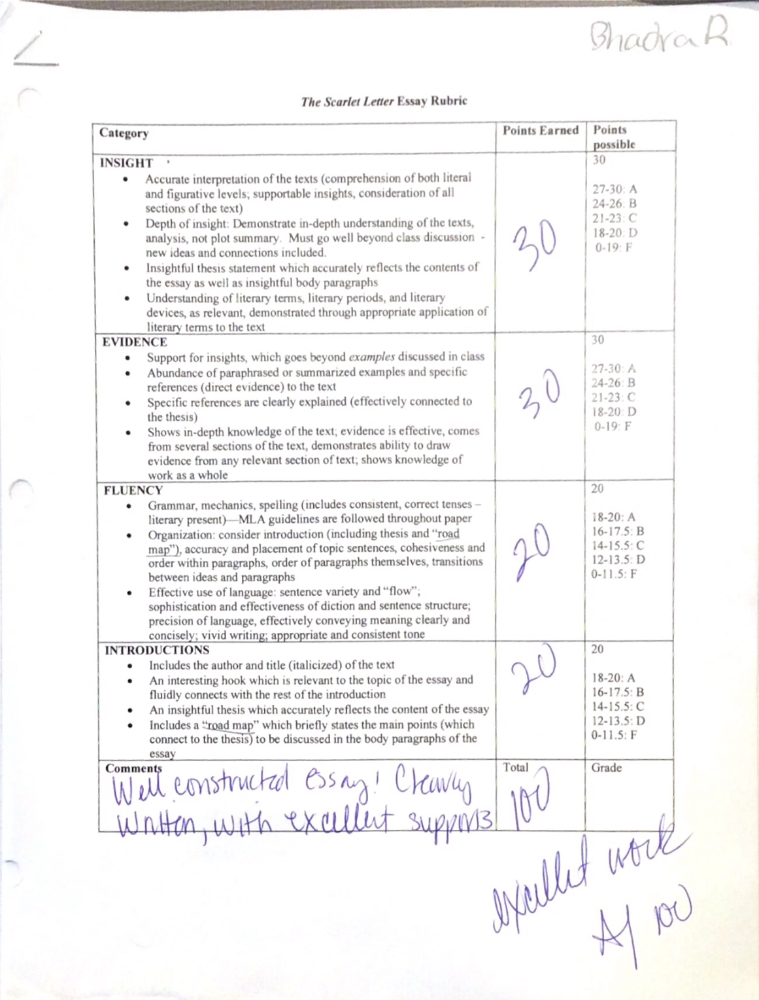
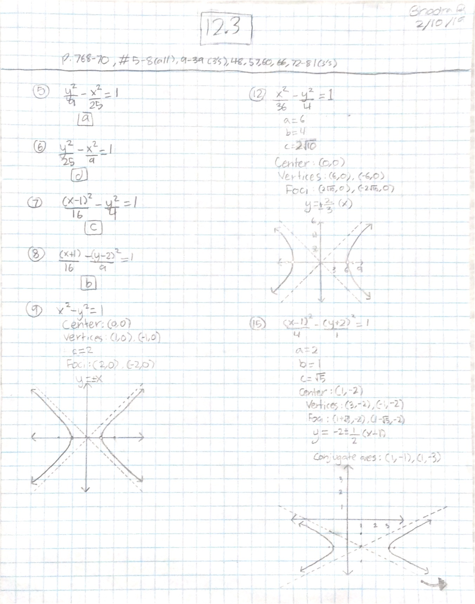
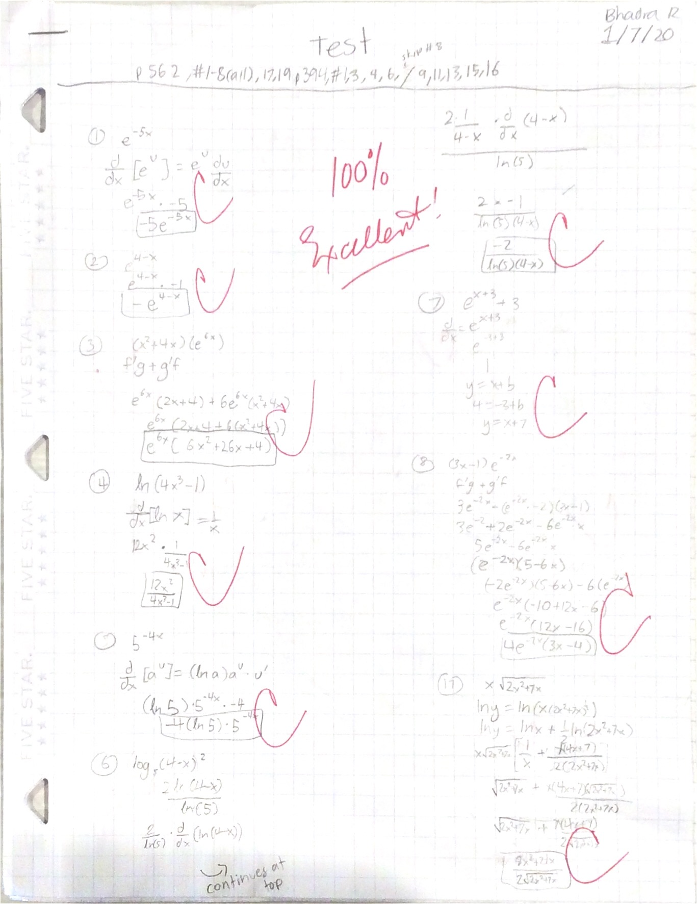
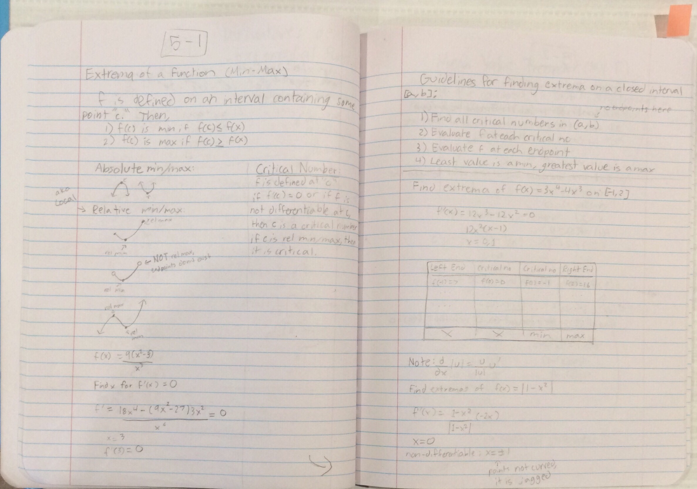

Hi! My name is Bhadra, and I go to the Rhoades School. I have been attending Rhoades for eight years, and this is my ninth! This year I am in eighth grade. These are four artifacts from the subjects of Literature, Social Studies, Math, and Spanish:
Social Studies
The map project we did in Social Studies was one of my favorite projects I have done this year
This relates to my SMART Goal because a part of the Map project was to annotate the map that we drew. In addition, we had to write a thesis statement connecting all of our annotations. This greatly helped me improve my analysis because it was connected to a physical map that I made myself.
This relates to my strength because I consider myself to be good at interactive and hands-on projects. This map project was very hands-on because we createc the maps ourselves from scratch.
The habit of mind that relates most to this artifact is "Striving for Accuracy" because there were many parts to the projedt that all worked together in harmony, so if one part was not accurate, the whole project would not be accurate. For example, if the map was inaccurate, it would be hard to annotate the right features of physical geography.
Literature
 This is a picture of my essay for The Scarlet Letter, a novel by Nathaniel Hawthorne.
We read the Scarlet Letter as our first novel this year. At the end we were given 6 prompts to choose from. The prompt I chose asked me to write an essay with on whether The Scarlet Letter was a feminist novel and if Hester Prynne (the main character) was a strong female protagonist. I agreed, so my argument was that The Scarlet Letter was a feminist novel ahead of its time.
This artifact relates to my strength because originally my strength was only that I was good at hands-on projects. However, this year I feel that my strength has also expanded to analysis, as shown in this artifact.
This artifact relates to my SMART Goal because I really used it as a chance to incorporate analysis in my essay and spend time revising to provide adequate analysis from reliable sources.
This artifact relates to the Habit of Mind "thinking flexibly" because we had to think of an argument and provide different pieces of evidence to prove my arguments.
Spanish
We have done many Spanish projects/videos over the year, but one of the ones I am most proud of is the "Mis Veranos Cuando era Pequeña..." video.
This artifact relates to my strength because it was an interactive project so I enjoyed it a lot.
This artifact relates to my SMART Goal because now that I am in a more advanced level of Spanish, I can include minimal analysis/advanced language in projects. For example, in this project, a large part of it was the detailed description.
This artifact relates most the Habit of Mind "Thinking and communicating with clarity and precision" because conveying language precisely and clearly is essential to learning and communicating a language.
Math
This year, because I am in an advanced math class, it is important that my habits of mind also reflect an advanced level. I believe that my homework, tests, and my math notebook are good examples of this. Overall, I believe that I have shown improvement over the years in my work in math.
 This is an example of my homework this year This is an example of one of my math testsThese are two pages from my math notebook for this year